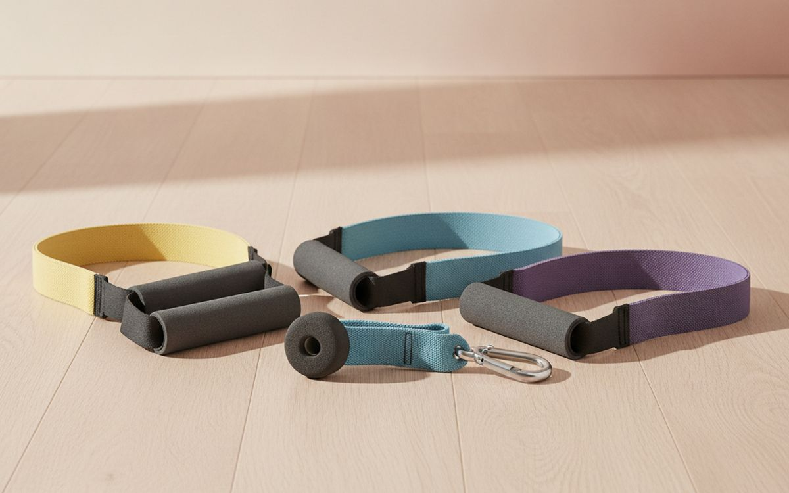
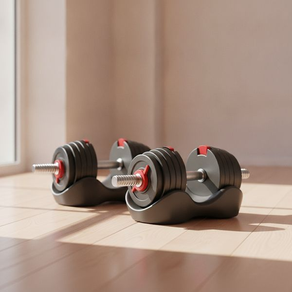
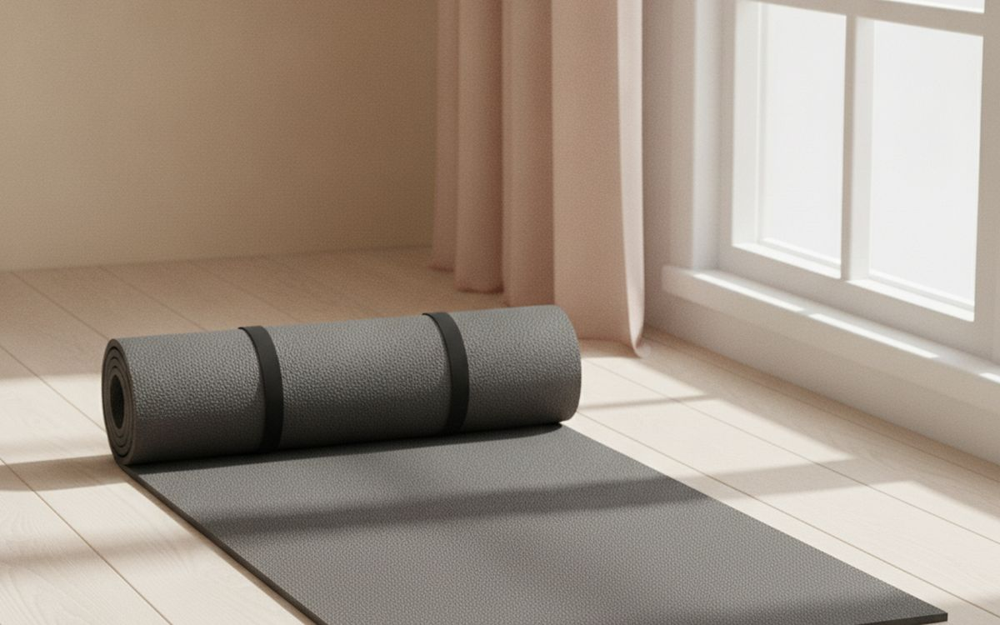
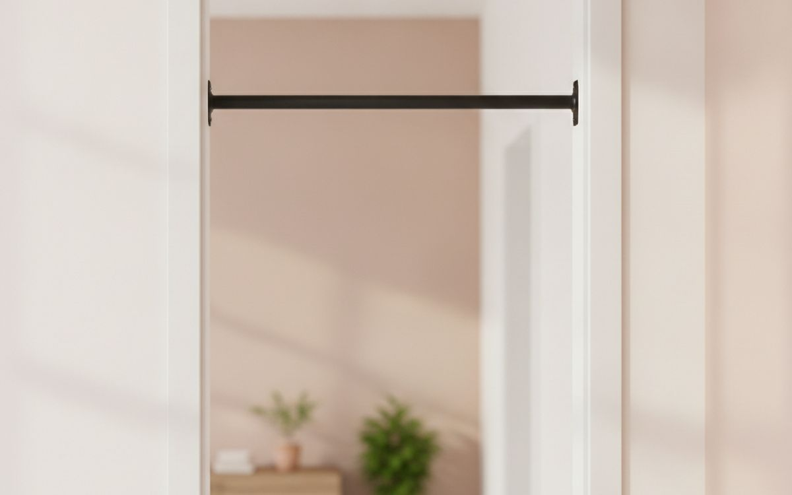
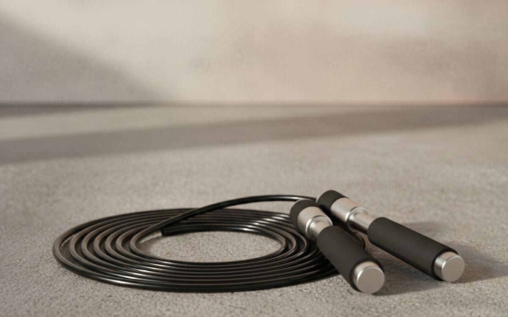
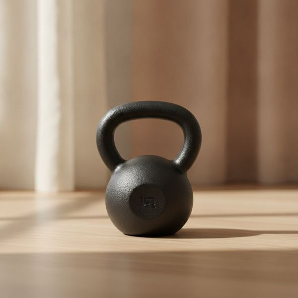
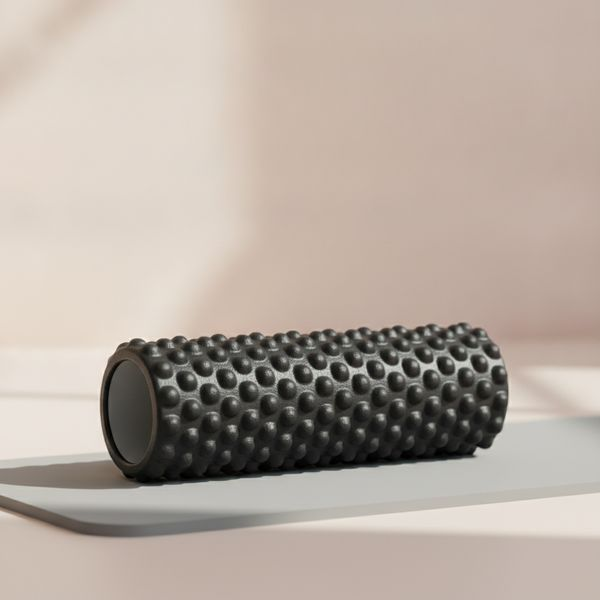
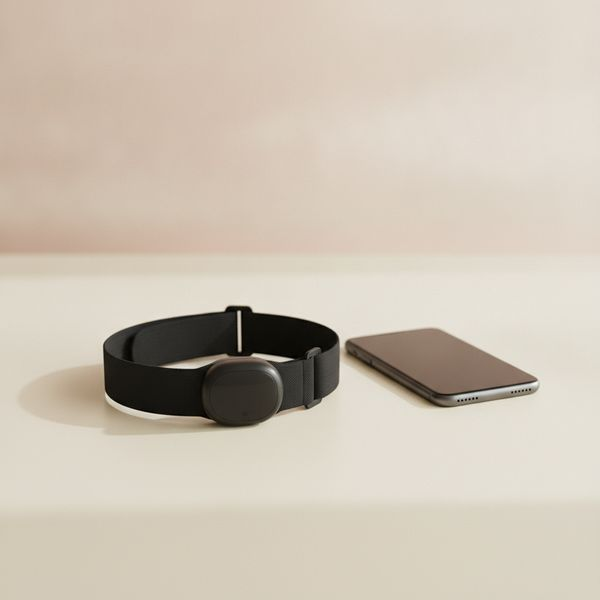
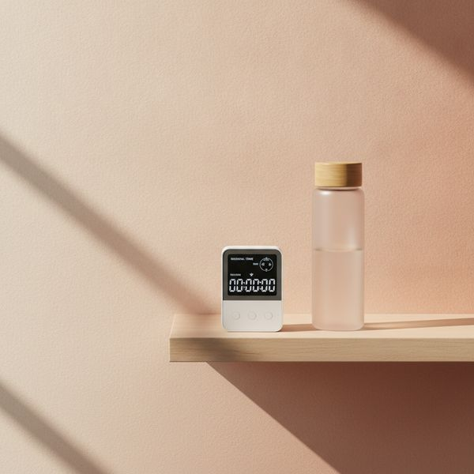
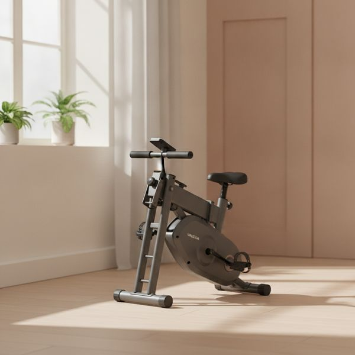

מסודר לפי הסיכוי שכל פריט עדיין יהיה בשימוש בשנה הבאה, ולא לפי כמה טוב הוא נראה במחסן.
אופן הכישלון של ציוד כושר ביתי הוא לא שהוא נשבר. זה שהוא הופך למתלה בגדים. כל הליכון שלא בשימוש נקנה בידי מישהו עם מוטיבציה אמיתית, ומה שהביס אותו היה חיכוך: זמן הקמה, מקום, רעש, או פריט שעושה רק דבר אחד.
לכן הסדר כאן הוא לפי הסיכוי להמשך שימוש ולא לפי יכולת. הפריטים הזולים, שנמצאים תמיד מול העיניים ומוכנים תוך שלושים שניות, נמצאים למעלה בכוונה, כי ציוד שאפשר להתחיל להשתמש בו תוך חצי דקה הוא ציוד שעדיין תשתמשו בו בעוד שנה.
הערה כנה אחת לפני הרשימה. שום דבר כאן אינו ייעוץ רפואי, ואם יש לכם פציעה, בעיה לבבית או שאתם חוזרים לפעילות אחרי הפסקה ארוכה, איש מקצוע שרואה אתכם שווה יותר מכל דבר בעמוד הזה.
המחירים הם הערכה נכון לזמן הכתיבה.
גילוי נאות. הקישורים בעמוד הזה הם קישורי שותפים. אם תקנו דרכם אנחנו עשויים להרוויח עמלה, בלי תוספת עלות לכם. זה לא משפיע על מה שנכנס לרשימה או על הסדר שלו.
איך בחרנו
אנחנו מעדיפים ציוד רב-תכליתי, שקט מספיק לדירה, מהיר להקמה וקשה לשבירה. אנחנו נשענים על בדיקות ציוד שפורסמו, על נוהג אימוני ועל דיווחים של בעלים לאורך זמן, ולא התאמנו בעצמנו עם כל פריט כאן. איפה שהתשובה הכנה היא שאתם לא צריכים לקנות כלום, נגיד את זה — כמה מהדברים היעילים ביותר שאפשר לעשות בבית לא עולים כלום.
השוואה מהירה
המחירים הם הערכה נכון לזמן הכתיבה ומשתנים לעיתים קרובות.
הבחירות

1
הסיכוי הגבוה ביותר שתמשיכו להשתמשסט גומיות התנגדות עם ידיות
$25–50
גומיות נמצאות בראש הרשימה מסיבה אחת: הן מסלקות כל תירוץ. הן עולות פחות מחודש מנוי לחדר כושר, חיות במגירה, לא שוקלות כלום במזוודה, ומוכנות תוך עשר שניות בערך. עם עוגן לדלת אפשר למשוך, לדחוף ולחתור דרך רוב דפוסי התנועה שמכונת כבלים מציעה. עקומת ההתנגדות שונה ממשקולות חופשיות — הכי קשה במתיחה מלאה ולא קבועה — וזה מתאים לחלק מהתרגילים ופחות לאחרים. הן גם מתבלות עם הזמן, אז בדקו חתכים ליד הידיות והחליפו אותן לפני שאחת תיקרע לכם חזרה.
בעד
- הדרך הזולה ביותר לאמן את כל הגוף
- נכנס בקלות למגירה או למזוודה
- הכנה של עשר שניות מבטלת את התירוץ העיקרי
נגד
- עקומת ההתנגדות שונה מזו של משקולות חופשיות
- הגומי מתבלה — בדקו אותו באופן קבוע והחליפו כשצריך

2
הרכישה הבודדת הטובה ביותרמשקולות יד מתכווננות מסוג Bowflex או NÜOBELL
$300–550
זוג אחד של משקולות מתכווננות מחליף בערך חמישה-עשר זוגות קבועים ואת המתקן שמחזיק אותם, וזה ההבדל בין חדר כושר ביתי שנכנס בפינה לבין כזה שדורש חדר. חיסכון המקום הזה הוא כל הטיעון, והוא טיעון חזק. שתי אזהרות מעשיות. ראשית, הן לא אוהבות שמפילים אותן — מנגנון הכוונון הוא החלק השברירי, אז הן מתאימות לאימון מבוקר ולא לסטים כבדים עד כישלון. שנית, בדקו את מהירות ההחלפה: אלה שמחליפות משקל בשנייה משמשות לסטים יורדים, ואלה שלוקח להן חמש-עשרה שניות פשוט לא.
בעד
- מחליפות סטנד שלם של משקולות בשטח רצפה קטן
- מכסות את רוב אימוני הכוח שאפשר לעשות בבית
- שומרות היטב על ערכן במכירה חוזרת
נגד
- הפלה עלולה להרוס את המנגנון
- דגמים שלוקח זמן לכוונן לא מתאימים לסגנונות אימון מסוימים

3
זול ובשימוש מתמידמזרן אימון עבה ואיכותי
$30–70
מזרן הוא מה שהופך כל רצפה למקום שאתם מוכנים לשכב עליו, וזה רוב הקרב בכל מה שקשור למתיחות, לעבודת ליבה ולתרגילי שיקום. העובי הוא המפרט שמשנה — מזרני היוגה הדקים שנמכרים בכל מקום איומים לכל דבר שכולל עמוד שדרה או ברכיים שנלחצים לרצפה. בערך 10 מילימטר זו נקודת האיזון לאימון כללי. הוא גם עושה עבודה אמיתית בבליעת רעש, וזה חשוב יותר ממה שאנשים מצפים אם יש לכם שכנים מלמטה ואתם מתאמנים מוקדם בבוקר.
בעד
- הופך תרגילי רצפה לנוחים באמת
- סופג רעשים עבור השכנים מלמטה
- מתגלגל ונעלם תוך שניות
נגד
- מזרני יוגה דקים הם חיסכון שלא משתלם כאן
- ספוג זול נמעך ומוציא ריח בהתחלה

4
הכי הרבה כוח לכל שקלמוט מתח לפתח דלת
$30–60
אין דרך זולה יותר לבנות כוח משיכה בפלג גוף עליון, ומשיכה היא החצי של האימון שעמדות ביתיות בדרך כלל מזניחות לגמרי. מוט בפתח דלת שאתם עוברים בו כמה פעמים ביום גם יוצר את מנגנון ההרגל הטוב ביותר שקיים — כמה חזרות בכל מעבר. ההתאמה היא מה שחשוב לדייק בו: מדדו את רוחב ועומק המשקוף, ובדקו שהמסגרת מוצקה ולא גבס חלול. מוטות שנתלים בעיקרון המנוף לוחצים חזק על המשקוף מלמעלה, אז בדקו מדי פעם סימנים על הציפוי, ולעולם אל תתקינו מוט מעל גרם מדרגות.
בעד
- תמורה חסרת תחרות לכוח פלג גוף עליון
- מעודד סטים קצרים ותכופים לאורך היום
- אפשר לאחסן אותו שטוח או להשאיר אותו מותקן
נגד
- דורש משקוף חזק במידה הנכונה
- עלול להשאיר סימנים או שקעים במשקוף עם הזמן

5
האימון האירובי הטוב ביותר במקום הכי קטןחבל קפיצה
$15–35
עשר דקות קפיצה בחבל הן אימון קרדיו רציני, והציוד עולה פחות משיעור ספינינג אחד ונכנס לכיס. הוא גם בונה חוסן בשרירי השוק וקואורדינציה בצורה שריצה על הליכון לא עושה. האילוצים הכנים: אתם צריכים בערך שני מטר וחצי גובה תקרה, משטח סלחני, ושכנים מלמטה שאינם בבית או שהם סובלניים. זה גם באמת קשה בהתחלה — צפו להצליף לעצמכם בשוקיים בשבוע הראשון, וכווננו את החבל כך שהידיות יגיעו לבתי השחי כשאתם עומדים על אמצעו.
בעד
- אימון אירובי רציני בעשר דקות
- נכנסת לכיס, עולה כמעט כלום
- בונה קואורדינציה וחוסן של הרגליים התחתונות
נגד
- צריך תקרה גבוהה ושכנים סובלניים
- יש עקומת למידה אמיתית בשבוע הראשון

6
חפץ אחד, אימון לכל הגוףקטלבל (16 או 12 קילו להתחלה)
$50–110
קטלבל הוא תמורה טובה במיוחד כי הידית הלא מרוכזת מאפשרת סווינגים, קלינים ותרגילי קימה — תנועות שמאמנות את כל השרשרת האחורית ואת הכושר האירובי בו זמנית. פעמון אחד הוא תוכנית מלאה למתחיל. הוא גם בלתי ניתן להריסה, שקט, תופס מקום של קופסת נעליים, ויהיה שווה בערך את מה ששילמתם עליו אם תמכרו אותו בעוד חמש שנים. ההסתייגות החשובה היא טכניקה: הסווינג הוא כיפוף מפרק הירך ולא סקוואט ולא הרמה עם הידיים, ולעשות אותו לא נכון זו דרך מוכרת היטב לפגוע בגב התחתון. תלמדו את הכיפוף לפני שתוסיפו מהירות.
בעד
- אביזר אחד מכסה גם כוח וגם סיבולת
- למעשה בלתי ניתן להריסה ושקט
- שומר על ערכו במכירה חוזרת
נגד
- טכניקת הנפה נכונה היא קריטית לגב שלכם
- משקל קבוע אחד מגביל את ההתקדמות

7
טוב, עם ציפיות מתונותרולר קצף
$25–50
גלגול שרירים תפוסים גורם לאנשים להרגיש טוב יותר ולנוע בחופשיות רבה יותר בטווח הקצר, והוא עולה מעט מאוד. מה שהוא לא עושה זה את הדברים העמוקים יותר שמשווקים בשמו — הוא לא מפרק רקמת צלקת ולא מאריך שריר לצמיתות, והראיות לכך שהוא מונע פציעות דלות. תשפטו אותו כדרך נעימה וזולה להתרכך לפני אימון ולהרגיש פחות תפוסים אחריו, וכך הוא באמת שווה החזקה. תשפטו אותו כטיפול ותתאכזבו. קחו רולר ארוך, כי אורך של 90 סנטימטר מאפשר לשכב לאורך עמוד השדרה ולא רק לגלגל רגליים.
בעד
- זול, ומרגיש ממש טוב
- כלי שימושי לחימום ולשחרור
- אין מה שיתקלקל או ידרוש תחזוקה
נגד
- ההבטחות השיווקיות מקדימות את הראיות המדעיות
- לא נוח על שרירים תפוסים מאוד בהתחלה

8
הנתונים הטובים ביותר ביחס למחירמד דופק חזה
$50–95
מדידת דופק מפרק היד משכנעת במנוחה ולא אמינה במקטעים אינטנסיביים, וזה בדיוק כשהמספר חשוב. רצועת חזה קוראת את האות החשמלי ישירות והיא קרובה לדיוק מעבדתי, והיא מתחברת כמעט לכל אפליקציה או מכשיר דרך בלוטות'. הערך הוא לא המספר עצמו אלא מה שהוא מונע מכם: רוב האנשים מתאמנים חזק מדי באימונים הקלים וקל מדי באימונים הקשים, וראיית המספר בזמן אמת היא הפתרון הפשוט ביותר לזה. היא פחות נוחה משעון, והרצועה דורשת שטיפה אחרת היא מתחילה להריח.
בעד
- הרבה יותר מדויקת מחיישני שעון תחת מאמץ
- עובדת עם כמעט כל אפליקציה או מכשיר כושר
- מונעת מכם להתאמן באותה עצימות בכל אימון
נגד
- פחות נוחה משעון
- צריך לשטוף את הרצועה אחרי כל שימוש

9
לא עולה כלום, משנה הכולטיימר זול או אפליקציית אינטרוולים
$0–25
ההבדל בין להסתובב בדירה בין סטים לבין לסיים אימון בשלושים דקות ממוקדות הוא כמעט לגמרי טיימר. מנוחות קבועות שומרות על עצימות כנה, מונעות מכם לגלול בטלפון בין סטים, והופכות כוונה מעורפלת לאימון עם סוף. אפליקציה חינמית בטלפון עושה את זה מצוין, אז תתייחסו לכסף כרשות — טיימר ייעודי שווה את זה רק כי הוא משאיר את הטלפון מחוץ ליד, ובשביל הרבה אנשים זו התועלת האמיתית שנקנית כאן.
בעד
- הגרסה החינמית עובדת מצוין
- שומרת על אימונים קצרים ולעניין
- משחררת לכם את הטלפון מהיד
נגד
- אין פה באמת מה לקנות
- מכשירים ייעודיים הם רצון, לא צורך

10
לקנות אחרון, ולקנות יד שנייהאופני כושר מתקפלים או מכונת חתירה
$200–900
מכונות קרדיו גדולות נמצאות בסוף הרשימה כי הן הכי נזנחות. הן יקרות, הן משתלטות על חדר, והן עושות דבר אחד. עם זאת, אם מזג אוויר גרוע או ילדים קטנים באמת מונעים מכם לצאת מהבית, מכונה בבית היא ההבדל בין להתאמן לבין לא להתאמן, ואז היא שווה כל שקל. שתי עצות. תקנו יד שנייה, כי הפחת על אלה אכזרי ושוק היד השנייה מלא בדוגמאות שכמעט לא נגעו בהן, בדיוק מהסיבה שתוארה למעלה. ובחרו התנגדות מגנטית בשביל השקט אם אתם גרים בדירה.
בעד
- מבטלים את התירוצים של מזג אוויר וטיפול בילדים
- שוק היד שנייה מלא במכשירים כמעט חדשים
- דגמים מגנטיים שקטים מספיק לדירה
נגד
- הקנייה שננטשת הכי הרבה בתחום הכושר הביתי
- תופס מקום בחדר גם כשהוא מקופל
שאלות נפוצות
מה כדאי לקנות אם התקציב קטן?
גומיות, מזרן ומוט מתח. זה פחות מ-550 שקל ביחד ומכסה דחיפה, משיכה, ליבה וניידות — באמת מספיק לתוכנית שלמה למתחילים.
האם צריך משקולות כדי לבנות שריר בבית?
לא בהתחלה. התקדמות במשקל גוף בונה כוח אמיתי במשך חודשים, וגומיות מרחיבות את זה עוד. משקולות נעשות הכרחיות ברגע שתנועות משקל גוף מפסיקות לאתגר, במיוחד בפלג הגוף התחתון.
איך מתאמנים בלי לעצבן את השכנים מלמטה?
מזרן עבה, בלי קפיצות, וחזרות מבוקרות במקום משקולות שנופלות מכסים את רוב זה. סווינגים עם קטלבל, גומיות ועבודת משקל גוף כולם שקטים; קפיצה בחבל ופליומטריקה לא.
האם הליכון שווה את זה?
רק אם מזג האוויר או הבטיחות באמת מונעים מכם לרוץ בחוץ. הם הפריט הגדול, הרועש והנזנח ביותר בכושר ביתי, אז תקנו יד שנייה ותהיו כנים לגבי האקלים שלכם קודם.
← כל המדריכים
הגשנו בקשה להצטרף לתוכנית השותפים של אמזון. איננו שותפים של אמזון עדיין, ואיננו מרוויחים דבר מקישורים לאמזון בשלב זה. כשותפים של עליאקספרס אנחנו מרוויחים עמלה מרכישות מזכות. המחירים והזמינות נכונים לזמן הפרסום ועשויים להשתנות.